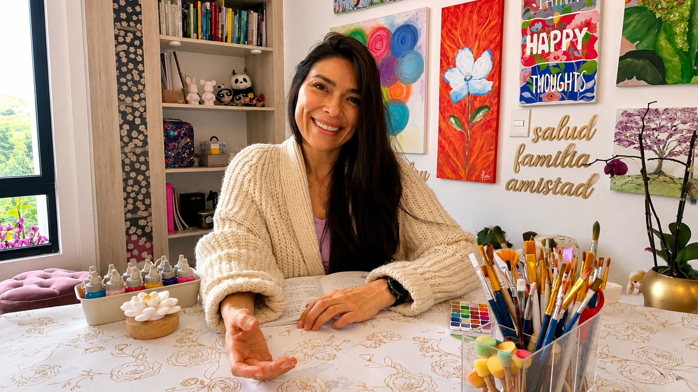

Correo
contacto@innerbloomart.comPara dudas generales,
colaboraciones o información.
Si tienes alguna pregunta, quieres saber qué experiencia es para ti o simplemente necesitas orientación, escríbeme. Estaré feliz de acompañarte.
◉ HABLAR CON CLAU POR WHATSAPP♡ Respuesta personalizada.
